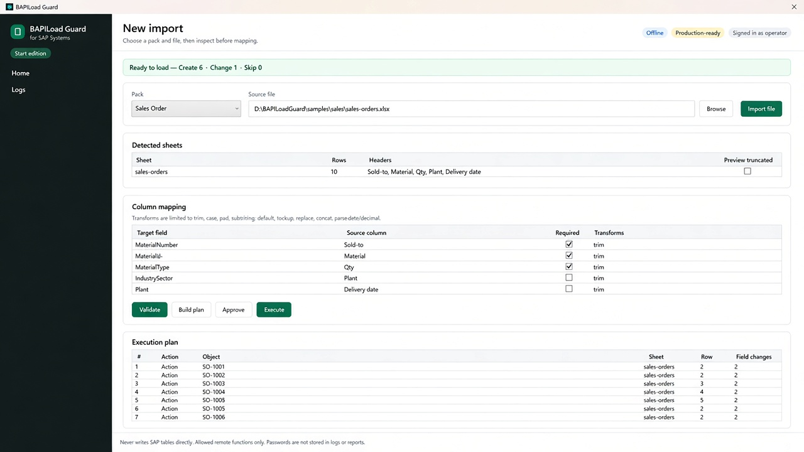
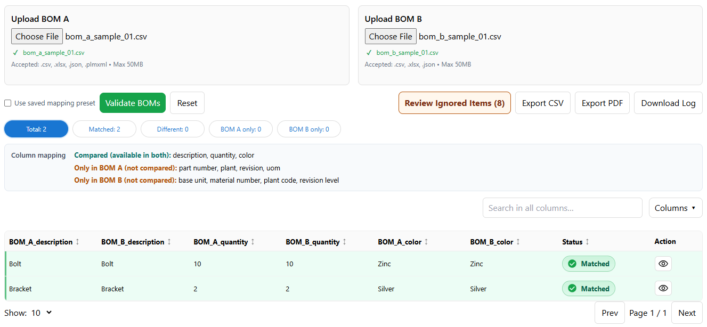
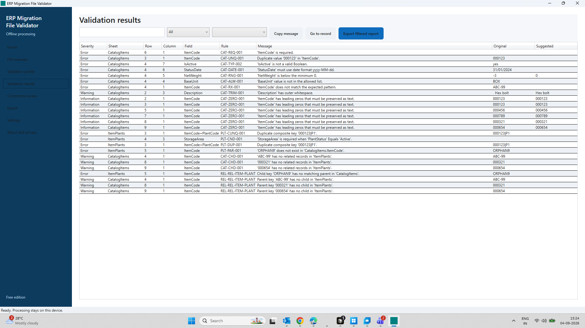

DocRev Manager
Drawing & revision vault before the wrong file reaches production
Manufacturing data ecosystem · USA · India · Worldwide
A focused set of Windows tools for manufacturing data—documents, BOM compare, ERP validation, SAP file loads and order release. BAPI Guard is the flagship for teams that load Excel/CSV into SAP through customer-authorized remote functions.

Flagship · Manufacturing data ecosystem
Validate Excel/CSV offline, review a Create / Change / Skip plan, then load through customer-allowlisted SAP remote functions. The centrepiece of our manufacturing data ecosystem for SAP teams.
Complementary tools along the path from drawings and BOMs to ERP, SAP load and shop-floor release. Start with the stage that hurts most—expand when you are ready. Each product stands alone; there is no shared login or automatic sync between apps.
Drawing & revision vault before the wrong file reaches production
Source vs target BOM differences before release
Migration CSV/XLSX checks before ERP upload
Offline Excel/CSV plan, then customer-authorized SAP remote functions
FlagshipRFQ / quote / PO discrepancies before manufacturing release
On-device lean experiment plans for the shop floor
Buy or demo one tool—or combine stages for a fuller manufacturing data practice. Same vendor support via the enquiry form.
Validate engineering data, compare BOMs and control document revisions before errors reach your ERP or production process.
Source and target BOM versions compared by eye—easy to miss part, quantity or plant differences.
Material or master-data files fail after upload because missing, duplicate or out-of-range values were not caught earlier.
Shop floor and suppliers work from the wrong document when revision control lives only in shared folders.
Wrong BOM or master data reaches production and creates scrap, delays and customer complaints.
Full PLM or ERP add-ons are often too complex for 20–200 employee manufacturers.
Engineers and data teams spend hours on repetitive Excel review that a focused Windows tool can accelerate.
Flagship first, then complementary products. Buy or download only where a verified store link exists; otherwise request a demo.
Problem: Validate Excel/CSV offline, then load through customer-authorized SAP remote functions—without blind spreadsheet uploads.

Problem: Detect BOM differences quickly instead of comparing versions manually in Excel.

Problem: Validate migration files before ERP upload to reduce Excel and data-entry errors.

Problem: Improve drawing and revision control so outdated documents do not reach the shop floor.
Also available: OrderRelease Guard on Microsoft Store (Manufacturing RFQ & PO Validator) and LeanConsult Factory on the Apple App Store.
A simple local workflow designed for busy engineering and data teams.
Choose BOM, migration or document files on your Windows PC.
Execute the compare, validate or revision workflow for your use case.
Inspect Matched/Different rows, validation findings or revision status.
Export an audit report or entitled output—without guessing from Excel alone.
Especially useful for companies with roughly 20–200 employees in the USA, India, Europe and other markets who work with BOMs, drawings, Excel data, ERP migrations or SAP.
Compare supplier and plant BOMs; validate material master files before ERP changes.
Control drawing revisions and compare engineering BOMs across design iterations.
Reduce Excel mistakes when cutting lists and assembly BOMs change between jobs.
Validate migration sheets and keep document revisions aligned with production releases.
Catch BOM and material-data differences before they reach scheduling or ERP.
Deliver cleaner client BOM diffs, migration checks and document packs.
Optional help so your team can adopt the tools quickly. Scope is confirmed after you submit the contact form.
Assisted install on Windows workstations.
Profiles, mappings and first-run setup guidance.
Where the product supports it, rules tailored to your files.
Output formats suited to your review process.
Short sessions for engineers and data teams.
Email support for licensed customers.
Watch product walkthroughs on our YouTube channel. Dedicated videos are published there as they become available.
Official channel for product demonstrations.
Share a sample or anonymized file, and we will demonstrate the relevant workflow for your manufacturing use case.